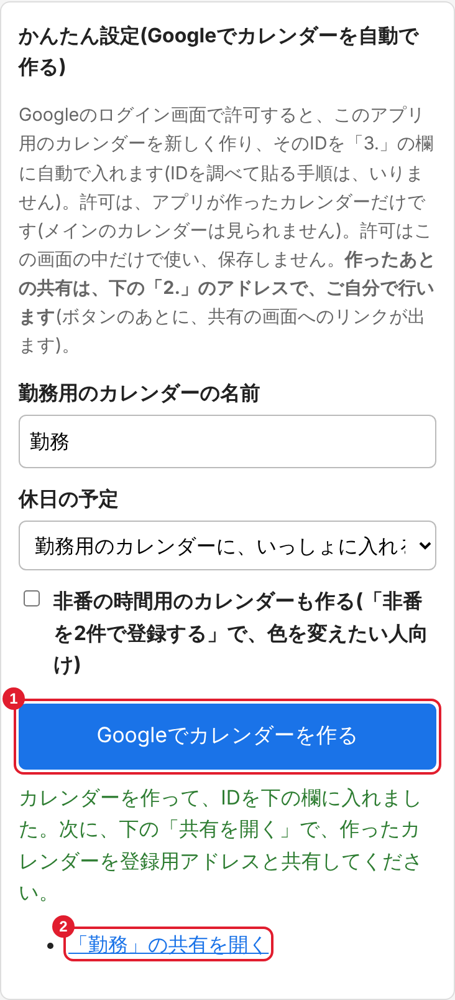

使い方
📄 印刷用の説明書(PDF)を開く(このページと同じ内容です)
はじめに: 全体の流れ
・このアプリ(スマホのブラウザ)
・Googleカレンダー(共有だけ。Android はアプリの「≡」→「設定」から、iPhone はブラウザの「PC表示」)
・管理者から聞く共通パスワード(登録のときだけ)
スマホのカレンダーアプリで勤務を見る人は、「6. 勤務を入力して、登録する」のあとに、「7. スマホのカレンダーで見る設定」も確認します。
最初の1回だけ設定をします(10〜15分ほど)。あとは勤務を入力して「登録」を押すだけです。
アプリで「登録」 → Googleカレンダーに予定が入る → 好きなカレンダーアプリで見る(同期をオンにします)
社員番号・名前・PIN・共通パスワード(管理者から聞く)
名前を決めてボタンを押すだけです
Android はアプリで、iPhone はブラウザの「PC表示」でできます
IDは自動で入ります。「保存して接続テスト」で「接続できました」と出れば完了
これを毎月くり返します
登録される予定
| 種類 | 入るカレンダー | タイトル | メモ |
|---|---|---|---|
| 泊 | 勤務用 | 番号 | 出勤時間(2行目に泊地) |
| 日勤 | 勤務用 | 番号 | 出勤〜退勤 |
| 出勤を2件で登録(設定で選んだ人) | 勤務用 | 番号の予定(終日)と、出勤の時間の予定(時間つき)の2つ | 番号の予定のメモは今まで通り |
| 非番(泊の翌日) | 勤務用 | 〜 | 退勤時間 |
| 非番を2件で登録(設定で選んだ人) | 「〜」は勤務用。時間の予定は非番の時間用(なければ勤務用) | 「〜」(終日)と、退勤の時間の予定(時間つき。例: 9:02)の2つ | 「〜」のメモは今まで通り |
| 休日(公休・年休など) | 休日用(なければ登録しない) | 特休・公休・年休など | なし |
予定は終日です(「出勤を2件で登録」「非番を2件で登録」の時間の予定だけは、時間つきです)。土日・祝日・年末年始(12/30〜1/3)は自動で「休」になります。
1. 新規登録とログイン
新規登録(最初の1回)
- 最初の画面の「新規登録」を押す(右の画面の 4)
- 次の画面で入力して「登録する」を押す
| 入れるもの | |
|---|---|
| 1 | 社員番号(7桁) |
| 2 | 名字と名前 |
| 3 4 | PIN(4桁の数字)を2回。忘れないように |
| 5 | 共通パスワード(管理者から聞く。登録のときだけ使う) |
登録できたら、そのまま設定画面に進みます。
ログイン(次回から)
最初の画面の「利用者」で、1 社員番号と 2 PIN を入れ、3 「ログイン」を押します。
管理者に頼むと、仮のPINを教えてもらえます。それでログインして、設定画面の「PINを変える」で好きなPINに変えてください。


2. かんたん設定で、勤務用のカレンダーを作る
このアプリ専用のカレンダーを、新しく作ります。自分のメインのカレンダーは使えません。手で入れている予定とも分けられるので、安心です。
- アプリの「設定」画面を開く
- 一番上の「かんたん設定」で、勤務用のカレンダーの名前を決める(そのままの「勤務」でもかまいません)
- 休日の予定は、「別に作る」「勤務用に、いっしょに入れる」「登録しない」から選ぶ
- 「非番を2件で登録する」を使い、色を変えたい人は、「非番の時間用のカレンダーも作る」にチェックを入れる(使わなければ、チェックなし)
- 「Googleでカレンダーを作る」(1)を押し、Googleの画面で許可する
- 作れると、下の「3.」の欄に、カレンダーIDが自動で入ります。ボタンの下に出る「共有を開く」(2)のリンクを、次の手順3で使います



かんたん設定を使わないとき(Googleカレンダーで手で作る)
- ブラウザ(スマホは「PC表示」にして)で https://calendar.google.com を開く
- 右上の歯車(1)を押し、「設定」(2)を選ぶ
- 左のメニューの「カレンダーを追加」を開き、「新しいカレンダーを作成」(1)を選ぶ(下の図)
- 名前(例: 勤務)を入れて「カレンダーを作成」
休日・非番の時間用のカレンダーも分けたい人は、同じ方法で作ります(休日用・非番の時間用は、なくてもかまいません)。左の「他のカレンダー」の横の「＋」からも、同じ「新しいカレンダーを作成」に進めます。作ったあとのIDは、手順4で調べます。


3. カレンダーを、アプリの登録用アドレスと共有する
作ったカレンダー(勤務用。休日用・非番の時間用も作った人は、それも)を、アプリの登録用アドレスと共有します。かんたん設定の「共有を開く」のリンクを押すと、共有の画面(手順Aの2番)が開きます。スマホでGoogleカレンダーのアプリが開いてしまうときは、ブラウザで calendar.google.com を開き「PC表示」にして、手順Aから進めます(共有は、Android なら、下の「アプリで共有する」でもできます)。
休日用・非番の時間用のカレンダーも作った人は、それぞれ同じ手順(A〜B)を行います。
Android の「Googleカレンダー」アプリで共有する(スマホだけでできます)
- アプリの左上の「≡」を押し、メニューの下の方にある「設定」ボタンを開く。一覧から、作ったカレンダー(図の 1、例: 勤務)を押す
- 「共有する相手」の、人のマーク(図の 2)を押す
- 上の「ユーザーまたはグループを追加」の欄に、コピーした登録用アドレスを貼り付けて、追加する
- 追加した登録用アドレスの権限が、「すべての予定の詳細を変更・表示可能」になっているのを確かめて(違うときは、そのアドレスを押して選び直して)、右上の「保存」を押す


iPhone のアプリは、画面が違う場合があります。iPhone の人は、ブラウザの「PC表示」で、下の手順A・Bで共有します(パソコンのブラウザでも同じです)。
手順A: 共有の画面を開く
- 手順2の「設定」の画面で、左のメニューの「マイカレンダーの設定」の中の「勤務」(図の 1)を押す
- 右の「共有する相手」の欄が共有の画面です(カレンダーの左の「︙」→「設定と共有」からも開けます)
手順B: アドレスを追加して、権限を選ぶ
- 「＋ ユーザーやグループを追加」(図の 2)を押す
- 出てきた画面の上の欄に、コピーした登録用アドレスを貼り付ける(右の図の 1)
- 権限の一覧から、上から4番目の「すべての予定の詳細の変更や表示ができます」(右の図の 2)を選ぶ
- 「送信」を押す(一覧を開いていると隠れています。選ぶと閉じて、下に出ます)
- 共有できると、「共有する相手」の欄に登録用アドレスが増え(図の 3)、権限が「すべての予定の詳細の変更や表示が…」になっています


・上の2つ(「予定の表示…」「予定の詳細の表示」)では、アプリが書き込めません。
・一番下の「予定の変更および共有の管理」は、強すぎるので選ばなくて大丈夫です。
・画面によっては「予定の変更権限」などの名前のこともあります。そのときは、予定を変更できるもので、共有の管理が付いていないものを選びます。
4. カレンダーIDを調べる(手で作った人だけ)
手順3と同じ「勤務」の設定の画面を、下にスクロールします。
- 「カレンダーの統合」という見出しを探す
- その中の「カレンダー ID」(1)の文字列を、全部コピーする

| 合っているID | 使えないもの |
|---|---|
| 英数字の長い文字列の後ろに @group.calendar.google.com が付いている | 自分のメールアドレスのID(メインのカレンダー) / カレンダーの名前 / 共有用のURL |
前後に空白が入らないように、コピーして貼り付けます。休日用・非番の時間用を作った人は、そのカレンダーのIDも同じように調べます。
5. アプリの設定画面で、区所を選んで接続テスト
- アプリの「設定」画面を開く
- 1 「区所」を選ぶ(番号の一覧は区所ごとに違います。下の「保存して接続テスト」を押すまでは保存されません)
- 2 登録用アドレスは、手順3で共有に使ったものです(共有がまだの人は、手順3を先に行います)
- 3 「勤務用カレンダーID」に、手順4でコピーしたIDを貼り付ける(かんたん設定で作った人は、もう入っています)
- 休日用のカレンダーを作った人は、「休日用カレンダーID」にそのIDを貼り付ける(使わない人は空のまま)
- Googleカレンダーだけで勤務を見る人は、「出勤を2件で登録する」「非番を2件で登録する」にチェックを入れる(下の「出勤を2件で登録する」「非番を2件で登録する」を見てください。ふだんのアプリの使い方なら、そのままで大丈夫です)
- 非番の時間の予定の色を変えたい人は、「非番の時間用カレンダーID」に、そのカレンダーのIDを貼り付ける(使わない人は空のまま)
- 4 「保存して接続テスト」を押す
休日用を空にすると、「休日」の番号(公休・年休など)は、カレンダーに登録されません。
「接続できました」と出れば、準備は完了です。

接続テストが失敗したとき
| 出た文 | 確認すること |
|---|---|
| 「○○カレンダーに書き込めません」 | 権限が「すべての予定の詳細の変更や表示ができます」か。共有した相手のアドレスが、登録用アドレスと同じか(コピーが確実)。IDの貼り間違いや空白がないか。勤務用と(使う人は)休日用・非番の時間用の、全部で共有したか |
| 「IDがメールアドレスの形です」 | メインのカレンダーのIDです。新しく作ったカレンダーのIDを入れます |
| 「他の利用者が登録しています」 | 他の人のカレンダーのIDでないか確認します。同じカレンダーは1人しか使えません |
| 「設定画面で区所を選んでください」 | 「1. 区所を選ぶ」を選んで、もう一度保存します |
共有した直後は、反映まで少し時間がかかることがあります。数分おいて、もう一度試してください。
6. 勤務を入力して、登録する


入力のしかた
- 日付の行の「番号」(1)を押すと、番号の一覧が出るので、選びます
- その月を入れ終わったら、下の「登録」(3)を押します
- Googleカレンダーに予定が入ります
| 場所 | 説明 |
|---|---|
| 上の ◀ ▶ | 月を切り替えます(今月より前には戻れません) |
| 2 平/休 | 土日・祝日・年末年始(12/30〜1/3)は自動で「休」になります(表示だけです) |
| 1 番号 | 押して選びます。一覧にないものは「手入力」で入れます。「クリア」で空に戻せます |
| 非番 | 泊の番号を入れると、翌日は自動で「非番」になります(翌日に入れてあった番号は消えます) |
| メモ | 番号を選ぶと、時間が自動で入ります。手で書き換えられます(書き換えると青字になります) |
月末が泊なら、翌月1日の非番も一緒に登録されます(翌月1日に入れてあった番号は消えます)。
カレンダーに入った予定
登録すると、Googleカレンダーに、番号のタイトルの終日の予定が入ります(泊の翌日は「〜」の非番)。

出勤を2件で登録する(Googleカレンダーだけで見る人向け)
設定画面の「出勤を2件で登録する」にチェックを入れると、出勤の日(泊・日勤)に、予定が2つ入ります。上が終日の番号(メモに時間)、下が出勤の時間(時間つきの予定。例: 10:00〜18:30)です。
- 日勤の時間の予定は、出勤から退勤までです。泊は、出勤から1時間の予定です(泊の翌日は、今までどおり終日の「〜」の非番に、メモで退勤時間が入ります)
- メモの時間は、今までどおり番号の予定に入ります。メモを手で書き換えた日は、書き換えた時間で時間の予定を作ります(時間でないメモの日は、番号の予定だけです)。一覧にない番号を「手入力」した日も、メモに時間(例: 10:00-23:00。「-」「ー」「―」「～」どれでも、全角でも可)を書けば、同じように2つになります(「〜」「-」「非番」「休」など、非番や休みを表す手入力は、メモに時間があっても1つのままです。非番は「非番を2件で登録する」で2つにできます)
- 休日は今までどおり(1件)です。非番は、下の「非番を2件で登録する」で選びます
- 次に登録する分から変わります。すでに登録した予定は変わらないので、変えたい月は、登録し直します(予定は作り直されます)
- チェックを外せば、元の1件に戻ります(これも登録し直した月から)
非番を2件で登録する(Googleカレンダーだけで見る人向け)
設定画面の「非番を2件で登録する」にチェックを入れると、非番の日に、予定が2つ入ります。上が終日の「〜」(メモに退勤時間)、下が退勤の時間(時間つきの予定。例: 9:02)です。
- 時間の予定は、退勤時間から1時間の予定です。タイトルは時間だけです
- 泊の翌日の非番のほか、「〜」「-」「非番」「明け」などを手入力した日も、メモに退勤時間(例: 9:02、〜9:02)を書けば2つになります(「公休」「年休」など休みの手入力は1つのままです)
- メモを時間でないものに書き換えた日は、「〜」の予定だけです
- 時間の予定だけ色を変えたいときは、「非番の時間用」のカレンダーを作って共有し、設定画面の「非番の時間用カレンダーID」に入れます。空なら勤務用に入ります(「〜」はどちらでも勤務用です)
- 非番の時間用カレンダーIDを入れているあいだは、チェックを外していても、接続テストで書き込めるかを確かめ、登録・リセットでそのカレンダーの予定も消します(共有を外すと登録できなくなります)。使うのをやめるときは、IDを空にして保存してから、Googleカレンダーの画面でそのカレンダーを削除します(登録済みの時間の予定が残らないように。このカレンダーには、アプリの時間の予定しか入りません)。勤務用・休日用と同じIDを入れていたときは、削除しないでください(IDを空にするだけで大丈夫です)
- 次に登録する分から変わります。すでに登録した予定は変わらないので、変えたい月は、登録し直します。チェックを外せば、元の1件に戻ります(これも登録し直した月から)
リセット(カレンダーから消す)
「リセット」(4)を押して月を選び、「削除」を押すと、その月にこのアプリで登録した予定を、カレンダーから消し、画面の入力内容も空にします。手で入れた予定は消えません。
7. スマホのカレンダーで見る設定(Android / iPhone)
登録した勤務の予定は、スマホのカレンダーアプリで見られます。見るために必要な設定は、使うスマホで違います。
Androidの人
Googleカレンダーの同期をオンにしてあれば、Googleカレンダーとつながるカレンダーアプリで、予定が出ます
「Googleカレンダー」アプリで見る人は、勤務用・休日用・非番の時間用のカレンダーが「表示(同期)」になっていれば、そのまま見られます(「Googleカレンダー」アプリの左上のメニューで、勤務用のカレンダーにチェックを入れます)。他のカレンダーアプリを使う人は、そのアプリにGoogleアカウントをつなぎ、Googleカレンダーの同期をオンにします。
iPhone・iPadの人
下の設定をします(最初の1回だけ)
標準カレンダーの同期をオンにしてあれば、標準カレンダーとつながるカレンダーアプリでも、予定が出ます
上の3番の設定のしかた(標準カレンダーに同期する)
iPhoneにGoogleアカウントを追加します。最初の1回だけです。
- iPhoneの「設定」アプリを開く
- 「カレンダー」を押す(iOS 18以降は、「アプリ」の中にあります)
- 「アカウント」→「アカウントを追加」の順に押し、「Google」を選ぶ
- 勤務用のカレンダーを作ったGoogleアカウントのメールアドレスとパスワードを入れてログインする
- 同期する項目の中の「カレンダー」のスイッチをオンにして、「保存」を押す
これで、iPhoneの標準の「カレンダー」アプリに、アプリで登録した勤務の予定が出ます。標準カレンダーとつながる他のカレンダーアプリ(お好きなもの)でも、標準カレンダーの同期がオンなら、同じ予定が見られます。
・反映まで、数分かかることがあります。「カレンダー」アプリを開き、下の「カレンダー」を押して、勤務用・休日用・非番の時間用のカレンダーにチェックが入っているか確認します。
・それでも出ないときは、スマホのブラウザで calendar.google.com/calendar/syncselect を開き、勤務用・休日用・非番の時間用のカレンダーにチェックを入れて「保存」を押します。
・設定は、カレンダーを作ったのと同じGoogleアカウントで行います(別のアカウントを追加しても、勤務の予定は出ません)。
どちらのスマホでも、予定を登録する手順(手順1〜6)は変わりません。登録はこのアプリで行い、スマホのカレンダーは見るだけに使います(スマホのカレンダーで予定を消したり直したりもできますが、このアプリで登録し直すと元に戻ります)。
8. ホーム画面に追加する(おすすめ)
アプリのように、1タップで開けるようになります。
iPhone(Safari)
- Safari でこのアプリを開く
- 下(または上)の「共有」ボタンを押す
- 下にスクロールして「ホーム画面に追加」→「追加」
Android(Chrome)
- Chrome でこのアプリを開く
- 右上の「︙」を押す
- 「ホーム画面に追加」→「インストール」(または「ショートカットを作成」)
Chrome の版によって、メニューの名前が「インストールとショートカットの作成」などになっていることがあります。
iPhone・Androidでログインできないとき(ログインしても、ログイン画面に戻るときも)
- 共通: 社員番号とPINは、手で入力します(スマホに保存されたパスワードが自動で入ると、名前や共通パスワードなど、違う値のことがあります)。プライベートブラウズ(シークレットモード)ではなく、通常のタブで開きます。広告ブロック(コンテンツブロッカー)を使っているときは、このサイトではオフにします
- iPhone: 「設定」→「アプリ」→「Safari」(iOSによっては「設定」→「Safari」)で、「すべてのCookieをブロック」をオフにします。ホーム画面から開いたアプリは、Safari とはログインが別です。ホーム画面から初めて開いたときは、もう一度ログインします
- Android: Chrome の右上の「︙」→「設定」→「サイトの設定」で、このサイトの Cookie(サイトのデータ)を許可します。ホーム画面から開いたアプリは、Chrome とログインが共通です
- LINE から開いたとき: LINE の中のブラウザで開くので、Safari・Chrome とはログインが別です。LINE の画面のメニュー(「…」や「︙」など)から、Safari や Chrome などのブラウザで開く項目を選ぶと、いつものブラウザで開けます(項目の名前は、機種や LINE の版で違います)
9. こまったとき
- ログインできない
- 社員番号(7桁)とPIN(4桁)が合っているか確認します。まだ登録していない人は「新規登録」から登録します。「続けて間違えたため…」と出たときは、15分ほど待ってからやり直します。スマホの人は、手順8の「iPhone・Androidでログインできないとき」も確認します。
- それでも解決しない・ほかに困ったことがある
- お問い合わせから管理者に送れます(ログイン前でも使えます。ログイン後は上のメニューの「お問い合わせ」)。返事は、画面(受付番号と確認コード)かメールで受け取れます。メールのときは、shiftflow.kinmu@gmail.com から届くので、迷惑メールフォルダも見てください。画像は3枚まで付けられます(iPhoneは「写真ライブラリ」から選びます)。PINは書かないでください。
- お知らせはどこで見られますか?
- ログイン画面の入力欄の上と、ログイン後の上のメニューの「お知らせ」で見られます。新しいお知らせがあると、メニューに赤い点が付きます。
- PINを忘れた
- 管理者に再設定を頼みます。仮のPINで入って、設定画面の「PINを変える」から好きなPINに変えます。再設定・変更のあとは、スマホに保存した古いPINが自動で入ることがあるので、手で入力します(ほかの端末のログインは消えます)。
- 登録するのに共通パスワードが必要と言われた
- 管理者が決めたパスワードです。管理者に聞いてください。登録のときにしか使いません。
- 番号の一覧に、自分の番号がない
- 設定画面で、自分の区所が選ばれているか確認します。一覧にない番号は「手入力」で入れられます。一覧に足したいときは、管理者に頼みます。
- 手で入れた予定が消えませんか?
- 消えません。このアプリは、自分が作った予定に目印を付けていて、登録し直しやリセットのときは、目印のある予定だけを消します。
- スマホのカレンダーに出ない
- 先に手順7(スマホのカレンダーで見る設定)を確認します。iPhone・iPadの標準の「カレンダー」アプリで見る人は、Googleアカウントの追加が必要です。済んでいるのに出ないときは、スマホのカレンダーアプリで、勤務用・休日用・非番の時間用のカレンダーが「表示(同期)」になっているか確認します。反映まで少し時間がかかることがあります。
- カレンダーを変えたい
- 新しいカレンダーを共有してから、設定画面でIDを入れ直して「保存して接続テスト」を押します。前のカレンダーの予定を消したいときは、カレンダーを変える前に「リセット」で消します(リセットは、その月の画面の入力内容も空にするので、入力を残したいときは使えません。そのときは、前のカレンダーを Googleカレンダーの画面から削除します。手で入れた予定も一緒に消えます)。非番の時間用カレンダーを足した・変えたときも同じです(使うのをやめるときは、上の「非番を2件で登録する」を見てください)。
- 使うのをやめたい / 共有を止めたい
- Googleカレンダーの「設定と共有」→「共有する相手」で、登録用アドレスの横の削除(×)を押します。これだけで、アプリはあなたのカレンダーに書き込めなくなります。登録済みの予定は残るので、不要なら先に「リセット」で消します。
- 個人のデータはどうなりますか?
- 社員番号・名前・区所・カレンダーID・入力した勤務の番号とメモは、このアプリのデータベースに保存されます。お問い合わせの内容とメールアドレスは、最後のやり取りから90日で自動で消えます(付けた画像はデータベースには保存せず、管理者の Discord と Gmail に届き、90日で消えます)。PINは暗号化した形で保存され、管理者にも分かりません(管理者がPINを再設定すると、その人として入れます。本人はログアウトされます)。管理者には、社員番号・名前・区所・最終ログイン日時・最後に登録した日・記録の日数が見えます(勤務の中身とカレンダーIDは見えません)。アプリは、あなたが共有したカレンダーにだけ書き込めます。
Google・Apple の画面の名前は、2026年9月に各社の公式ヘルプで確認しました。画面は変わることがあるので、名前が違うときは、近い名前の項目を探してください。
参考: カレンダーを共有する / 新しいカレンダーを作成する / Chrome のデスクトップ モード / Safari の表示の変更 / ホーム画面にウェブサイトを追加